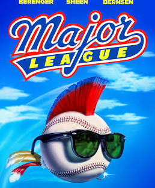
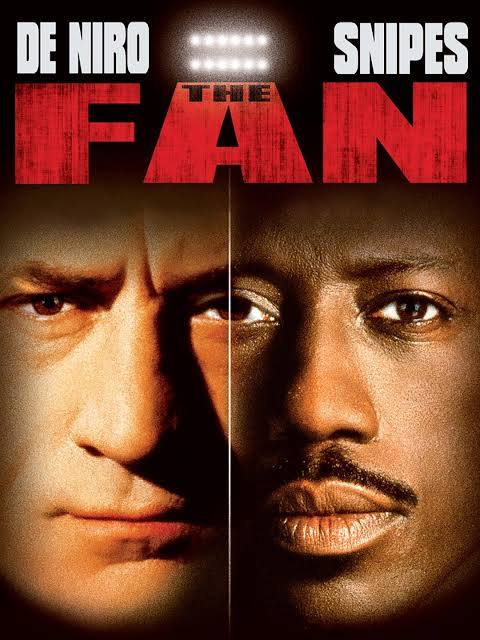
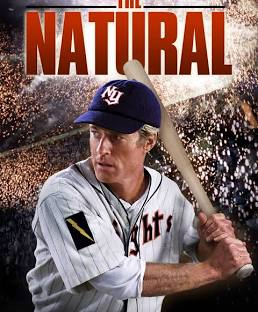
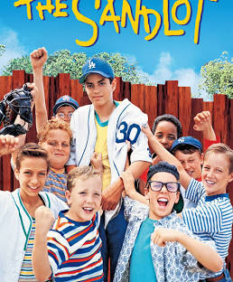
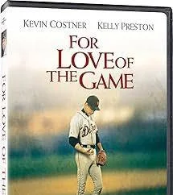
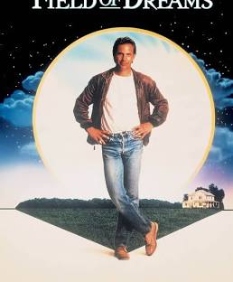

My Favorite Baseball Movie Collection
This is my curated collection of things that I love. Each item here represents something meaningful to me, whether it's a favorite book, game, album, rock, mineral, tool, art, or memory. This collection showcases how responsive design allows me to adapt my content across all screen sizes.

Major League
Movie | 1989 | Comedy
This is my favorite baseball movie of all time. Its funny and has an all star cast and has a great story line that a lot of small market teams could relate to.

The Fan
Movie | 1990 | Drama
Ths is my second favorite baseball movie about an obsessed fan that stalks his favorite player. Its an other great cast and has a lot of drama.

The Natural
Movie | 1984 | Drama
This is another great baseball movie, as a Cubs fan I enjoy this because Robert Redford play a young baseball phenom that was shot on his way to a tryout and 16 years later he got a chance to play for the New York Knights.

The Sandlot
Movie | 1993 | Comedy
The Sandlot is a great baseball movie about a group of kids that play baseball in the summer of 1962. Its a great story about friendship and growing up. I've watched this movie many times growing up.

For The Love of the Game
Movie | 1999 | Drama
This is an interesting baseball movie as a pitcher on the verge of retirement is pitching a perfect game and between innings it goes back to stories in his personal life.

Field of Dreams
Movie | 1989 | Drama
This is another classic where a baseball fan played by Kevin Costner builds a baseball field in his corn fields in hopes of great baseball players of the past coming to play on.